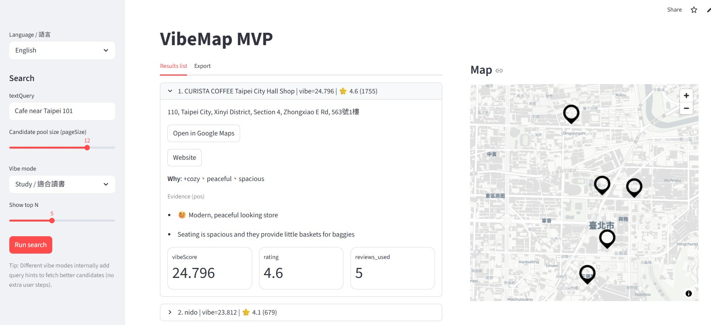
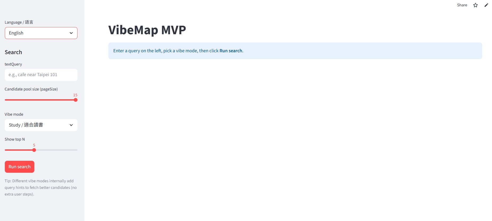

A mood-based place discovery app — built full-stack from scratch, then redesigned from a developer prototype into a product-grade experience.
The Problem
Every place discovery tool works the same way — you type a category, it returns a list sorted by rating. But "cafe" is not a feeling. Finding translates mood into search — using vibe scoring against real review data to surface places that match not just what you want, but how you want to feel when you get there.


Live Demo — Redesigned App
The same backend, rebuilt interface. Select a vibe, type a location, and see real results from Google Places — scored and ranked by mood match.
Fully functional — connected to live API.
Finding — live app, redesigned interface, real data.
Design Thinking
Replaced the select element with a visual radio list — each option visible at a glance, selectable with a single click.
Replaced generic markers with labeled bubbles showing rank and place name. Active selection highlights across both card and pin simultaneously.
Removed vibeScore, pageSize, and reviews_used from the UI entirely. Replaced with plain-language "why" and keyword tags from real reviews.
Result
Deployed on Google Cloud Run, served through a FastAPI backend with bilingual review matching and a cache that cuts API calls by 88%. Full i18n across English and Traditional Chinese.